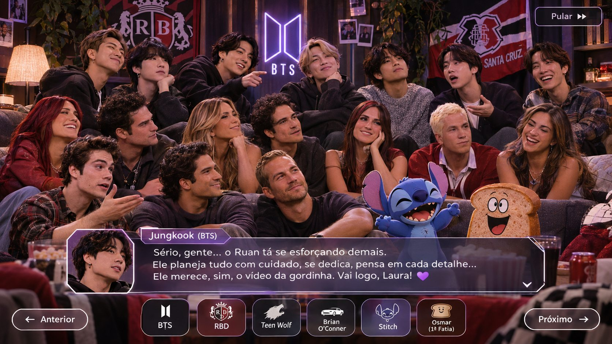

💜 🖤🤍❤️ 💜
Operação: Laura, ajuda o Ruan!
Uma reunião secreta. Muitos defensores. Um único pedido: o vídeo da gordinha.

Narrador
Laura, tu acabou de entrar numa reunião que ninguém te contou. Aperta “Começar” pra descobrir o que tá acontecendo...
🔒 A reunião ainda não começou.
0 / 26
Imagem ilustrativa e trecho musical enviado pelo usuário. Uma homenagem fictícia e bem-humorada, feita por fã. As falas são inventadas e não representam declarações reais dos artistas ou personagens.